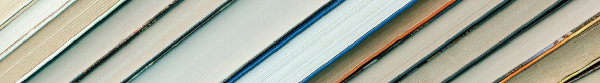

A Mil Livros é uma plataforma dedicada a exaltar o mundo da literatura. Desde leitores iniciantes até os mais habituados, todos são bem vindos a participar de uma comunidade de discussão literária que incentiva a descoberta, discussão e o relacionamento.
A ideia inicial da plataforma nasceu de um profundo respeito e interesse pela literatura. Esse projeto tem como principal proposta enfatizar como, em união, as pessoas podem descobrir novos interesses literários e explorar novos assuntos, expandindo seus horizontes. A leitura, além de ser uma fonte de entretenimento, é uma ferramenta de aprendizado que enriquece a mente e a imaginação. A Mil Livros se propõe a contribuir para esse processo, oferecendo um espaço onde leitores de todas as idades e origens possam se conectar, trocar experiências e crescer juntos
Exaltar a leitura é um dos principais pilares da Mil Livros. A plataforma tem o intuito de construir uma cultura de apreciação e reflexão, demonstrando que a leitura não é apenas um passatempo, mas sim uma atividade extremamente construtiva e rica, cheia de diversidade e profundidade.
A plataforma Mil Livros empodera o leitor ao oferecer um ambiente onde cada indivíduo pode se sentir valorizado e inspirado a explorar o vasto universo literário. Além disso, um dos principais pilares da plataforma é a tranformação da leitura em uma atividade ativa, envolvente e dinâmica, onde o leitor se torna o protagonista de sua própria jornada literária.
A plataforma Mil Livros fomenta o debate, a descoberta e a colaboração ao proporcionar um espaço onde leitores podem se conectar e compartilhar suas paixões literárias. A A Mil Livros acredita no poder enriquecedor que o diálogo tem.
Olá, meu nome é Bruno Santos Milici. Tenho 19 anos, estudo Sistemas de
Informação na SPTech e sou o desenvolvedor da Plataforma Mil Livros. Esse projeto é um
marco muito importante para mim, pois ele uniu dois dos meus grandes interesses: Tecnologia e
Literatura.
Desenvolver a Mil Livros foi uma oportunidade incrível de aprendizado e
evolução, que me proporcionou aplicar meus conhecimentos, superar dificuldades e aprender muitas
coisas novas durante todo o processo.
Tudo presente na plataforma foi desenvolvido por mim
com grande esforço, carinho e dedicação. espero que goste!
Dentre todos os Objetivos de Desenvolvimento Sustentável que as Nações Unidas definiram no Brasil, a Mil Livros se identifica e contribui para:

A leitura é um compenente de extrema importancia para a construção de uma sociedade com Educação de Qualidade. Por meio dos livros, os leitores têm acesso a uma vasta gama de informações e perspectivas, aumentado o seu entendimento sobre diversos assuntos e culturas, além de exercitar o seu senso crítico.
Habilidades como interpretação de texto, escrita, capacidade de concentração e pensamento criativo também são positivamente impactadas graças a leitura.
Incentivar a leitura tem um papel fundamental para a redução da desigualdade, pois fornece acesso ao conhecimento para todos, independentemente de suas condições sociais.
Para que a desigualdade seja reduzida na nossa sociedade, é preciso democratizar o acesso a livros e informação, fomentando uma cultura de colaboração e compartilhamento de exeperiências. A Mil Livros acredita que, ao tornar os livros e o conhecimento acessíveis a todos, podemos ajudar a diminuir as disparidades sociais e construir uma sociedade mais justa e igual.
Agora que você já está familiarizado com a nossa plataforma, aperte no botão Começar e junte-se a nossa comunidade!
Crie uma conta para poder fazer resenhas dos livros que você já leu, participar de discussões literárias em nosso mural e ver quais são os genêros e livros mais populares no momento na tela de Dashboard.